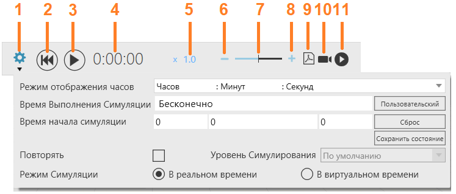

Элементы управления симуляцией в верхней части трехмерного мира позволяют запускать, останавливать, сбрасывать, записывать и настраивать симуляцию.

1. |
Настройки |
|---|---|
2. |
Сброс |
3. |
Воспроизведение/Пауза |
4. |
Таймер |
5. |
Скорость симуляции |
6. |
Уменьшить скорость |
7. |
Ползунок скорости |
8. |
Увеличить скорость |
9. |
Запись 3D PDF |
10. |
Запись видео |
11. |
Запись анимации |

Настройки
Параметры симулиции позволяют настроить выполнение симулиции.
Название |
Описание |
|---|---|
Режим отображения часов |
Определяет отображаемый формат часов симулиции. |
Пользовательский |
Позволяет вам определить время выполнения симуляции, ранее установленное на бесконечность. |
Повторять |
Включает/выключает зацикливание симуляции с определенным временем выполнения или окончанием. |
Сброс |
Сбрасывает время начала симуляции до нуля. |
Сохранить Состояние |
Сохраняет текущее местоположение и конфигурацию всех компонентов в 3D-мире. По умолчанию это делается автоматически в начале симуляции, чтобы вернуть компоненты в исходное состояние симуляции. |
Уровень Симулирования |
Указывает глобальную настройку точности для симуляции движений компонентов. По умолчанию Точность определяется компонентом. Подробно Максимально точно симулирует движения компонентов, тем самым симулируя полный диапазон движения компонента. Сбалансированный Симулирует движения компонента таким образом, чтобы он был сбалансирован с производительностью симуляции, благодаря чему компонент может перемещаться из точки в точку без симуляции ненужных движений суставов. Быстро Максимально быстро симулирует движения компонента, благодаря чему компонент может привязываться к конфигурации соединения или переходить из точки в точку. |
Режим Симуляции |
Определяет временной режим симуляции. В реальном времени Скорость симуляции масштабируется для работы в реальном времени, например, одна секунда в симуляции равняется одной секунде в реальном времени. В режиме реального времени вы можете использовать коэффициент масштабирования для ускорения или замедления симуляции, тем самым позволяя синхронизировать симуляцию с реальным устройством. В виртуальном времени Скорость симуляции зависит от скорости компьютера, что позволяет симуляции выполняться максимально быстро. В режиме виртуального времени вы можете использовать размер шага, чтобы определить виртуальную частоту кадров для рендеринга 3D-мира. Например, размер шага 0,3 будет отображать кадр каждые 0,3 секунды во время симуляции. |
Время Выполнения Симуляции |
Определяет время выполнения симуляции. |
Время начала симуляции |
Определяет момент времени для начала симуляции. Как правило, время начала симуляции используется для начала сбора статистики, когда компоненты находятся в предпочтительном состоянии. |
Скорость симуляции
Скорость симуляции может работать в виртуальном времени или быть настроена на работу в реальном времени и эмуляцию движений в реальном времени.
Сброс
Когда вы сбрасываете симуляцию, планировка трехмерного мира возвращается в исходное состояние.
·Компоненты возвращаются в исходное или сохраненное состояние в начале симуляции. Это означает, что динамические компоненты, созданные во время симуляции, будут удалены из планировки. Статический компонент вернется в свое сохраненное местоположение и будет иметь ту же иерархию и связи, что и в начале.
·Суставы и другие оси компонентов с кинематикой вернутся к значениям, которые у них были в начале.
·Системы координат Базы и Инструмента будут восстановлены в исходное положение. Это означает, что эффекты установки бази инструментов во время симуляции будут отменены.
·Сигналы и переменные робота будут сброшены до значений по умолчанию.
·Ваш вид 3D мира вернется в прежнее положение.